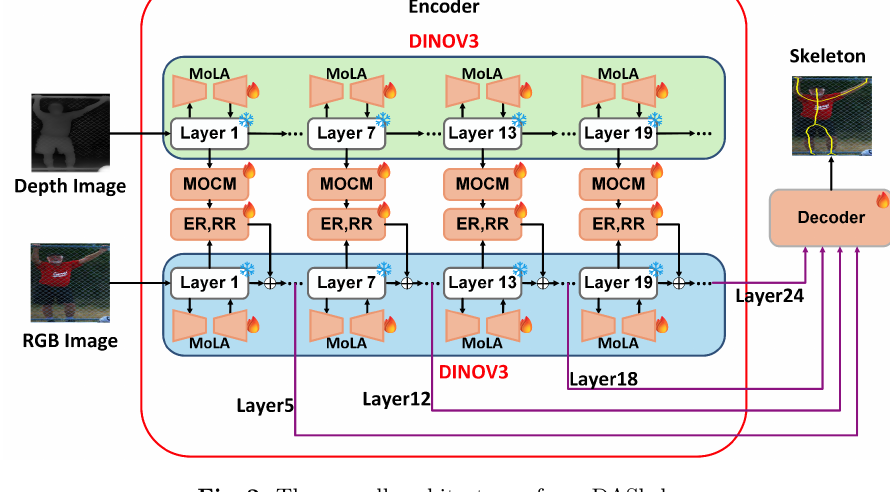

Depth-Assisted Skeleton Detection in Natural Images
Co-authored DASkel, a depth-assisted framework for skeleton detection that addresses RGB-only degradation under complex image content.
- Dual-stream RGB-D architecture with separate DINOv3 backbones.
- MoLA fine-tuning for efficient adaptation.
- Multi-orientation context module for feature selection and fusion.